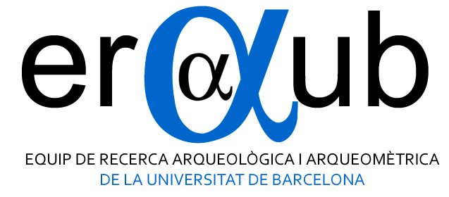
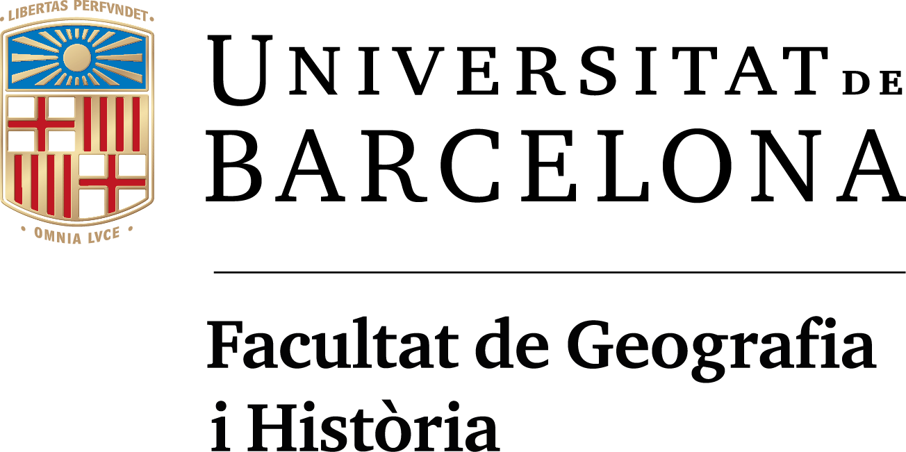
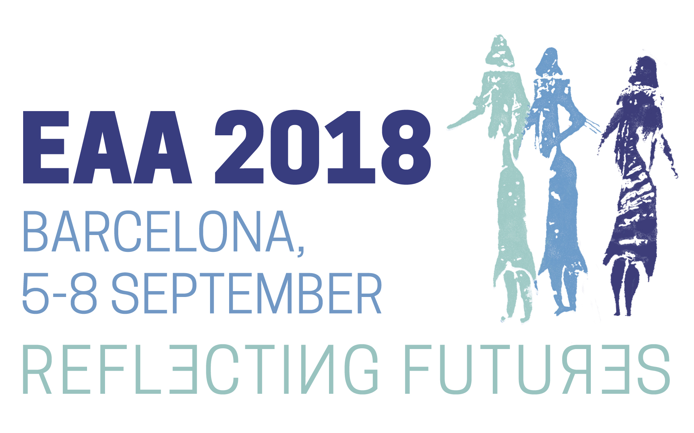
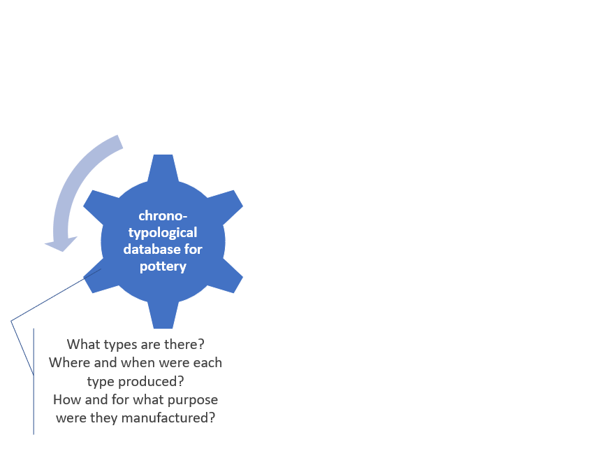
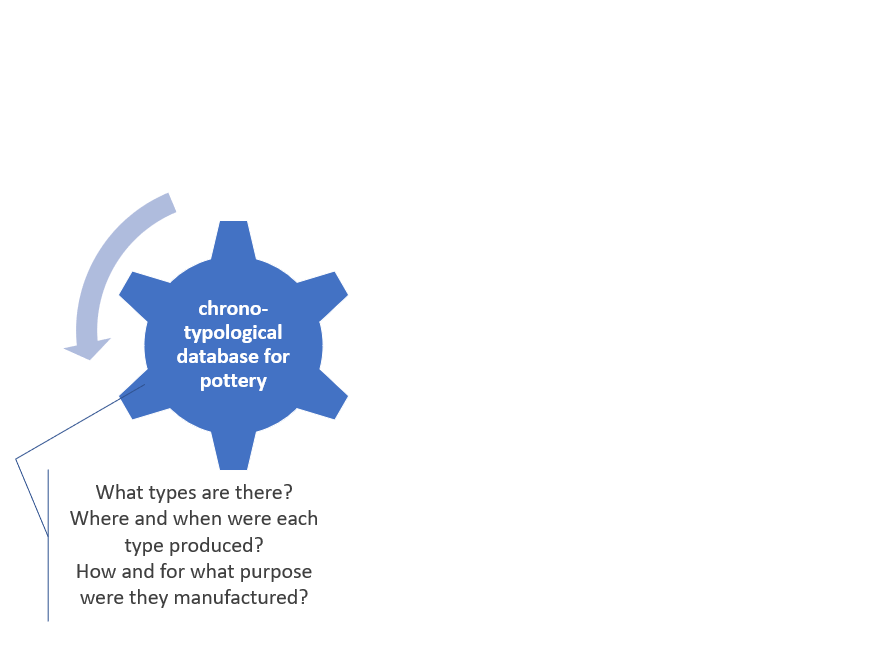

At the crossroads of data
Presenting the CAMOTECCER relational database of archaeological ceramics from Central AsiaAndreas Angourakis, Verónica Martínez Ferreras, Josep M. Gurt, Enrique Ariño Gil, Shakir R. Pidaev
  Context
CAMOTECCER project (2013-17),CERAC project (2017-20)
Archaeological and archaeometric study on ceramic production in Surkhan Darya region, Uzbekistan.
Goals
 


Areas of development:
- Historical and ethnographic research
- Definition of a theoretical model for (non-industrial) pottery production (→ data base design)
- Archaeometric characterisation of archaeological pottery
- Geological characterisation of the region (raw materials)
- Experimentation regarding the properties and the functional capabilities of ceramic containers
- Formalisation of the theoretical model
Why
Integrate results of many different archaeometric techniques on ceramics
Concerns
- centralize data management
- standardise qualitative data
- facilitate new entries
- export data sets (.csv) for statistical analysis
What
- relational database
- combines archaeological and archaeometric data
- more than 700 ceramic individuals
- sites in the Surkhan Darya region, Uzbekistan
- Hellenistic to Islamic period
- + over 200 wine Roman amphorae from Catalonia (generality test)
Tables and relationships

Tables > Individual

Gathers the basic information on ceramic individuals
Links them to the archaeological and archaeometric data
Tables > Context

Stratigraphic unit related to individuals
Relates to a site and (optionally) to a site sector
Dated numerically and/or linked to a period
Variables regarding inferred function
Tables > Site

Site name and initials
Geographical coordinates and parent unit ("region")
Environmetal situation and surface area
Tables > SubDivision

Recursive structure of geographical units
e.g., Termez → Bas Surkhan → South Surkhan Darya region → Surkhan Darya region → Uzbekistan
Stride, S. (2005). Géographie archéologique de la province du Surkhan Darya (Ouzbékistan du sud / Bactriane du nord). Ph.D thesis, Université Paris I Panthéon-Sorbonne.
Tables > Chem

Geochemical data (XRF)
+ reference group (if determined)
Tables > Chem reference group

Tables > Petro

Petrographic qualitative data (thin section optical microscopy)
+ fabric group (if determined)
Whitbread, I.K. (1995). Greek transport amphorae: a petrological and archaeological study, British School at Athens, Fitch Laboratory Occasional Paper 4, Athens.
Tables > Petro > Voids

Frequency and frequency per type of
size (micro to mega) and
shape (vesicles, vughs, channels, planes)
Tables > Petro > Coarse fraction

General characteristics + Frequency per type of rock and crystal
Tables > Petro > Fine fraction

General characteristics + Frequency per type of crystal
Tables > Fabric group

Tables > Surface

General properties + decoration, finishing and coating
Tables > Shape

Typology and measurements
Tables > Shape class

Name, function and description
At the crossroads of data
Presenting the CAMOTECCER relational database of archaeological ceramics from Central AsiaAndreas Angourakis, Verónica Martínez Ferreras, Josep M. Gurt, Enrique Ariño Gil, Shakir R. Pidaev
THANK YOU!
address any questions to A. Angourakis: andros.spica@gmail.com